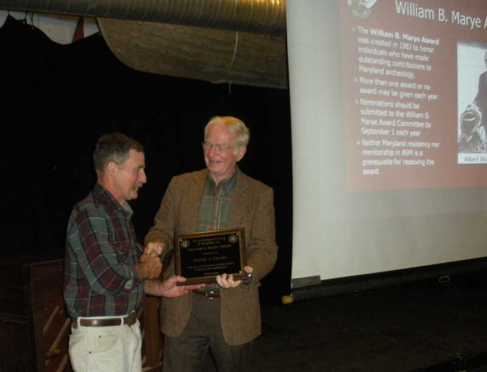
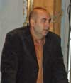
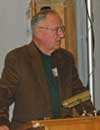
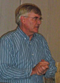
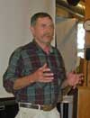

"The Archeology of Northeastern Maryland and Neighboring States"
hosted by the Archeological Society of the Northern Chesapeake
on Saturday, October 17, 2009
Havre de Grace Maritime Museum
100 Lafayette Street
Havre de Grace, MD
This year’s annual meeting showcased the many field projects taking place in Harford and Cecil counties in Maryland, Delaware, and southeastern Pennsylvania, featuring the cultural resources of the lower Susquehanna River Valley, the upper Chesapeake Bay, and Delaware Valley. Participants were treated to the presentations below:
The 2009 William B. Marye Award was presented to:
Dan Coates
2009 Frederick L. Stiner Memorial Lecture
"Delaware Department of Transportation Archaeology Program 2009" - David Clark
The Fredrica mitigation is the new standard for prehistoric mitigation in Deleware, and the Route 301 project is the largest statewide undertaking to date.

"The Concord Point Light Keeper's Dwelling: Avocational Archaeologists in Support of Volunteer Restoration and Preservation Projects" - Bill McIntyre
One of the chapter's premier field and lab projects, the Concord Point Lightkeeper's Swelling showcases community commitment for archaeology, history and preservation.

"Archaeology of the 1800 Susquehanna Canal, Cecil County, Maryland" - Ann Persson
The most recent chapter activity, the Susquehanna Canal project investigates on of the earliest waterways in America.

"The Preservation of the Heritage of Early Welsh Immigrants Through the Restoration of the Coulsontown Slateworkers' Cottages" - Don Robinson
The early Welsh heritage of Delta, Pensylvania is preserved through the activities of the Friends of Coulsontown Cottages.

"Archaeology and History of Cedar Hill Cemetery, Havre de Grace" - Adam Rybczynski
The history of Havre de Grace is reflected in the archival and archaeological research that brings the past to life.

Closing remarks and "Prehistoric Chesapeake Culture" - Dan Coates